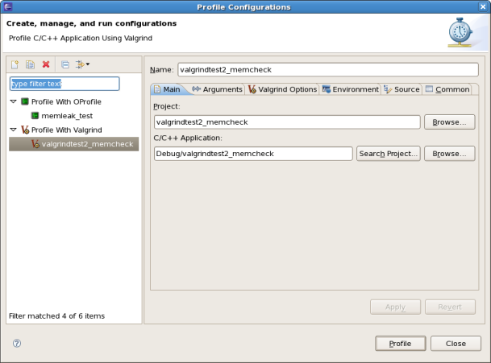
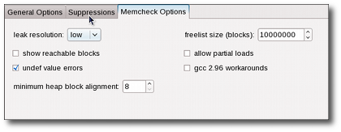
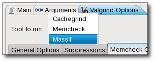
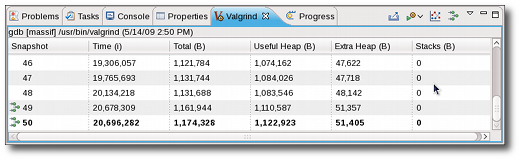

| Valgrind Reference | ||
|---|---|---|
|
|
||
| Updating This Document | ||
Valgrind is an instrumentation framework for building dynamic analysis tools used to profile applications in detail. Valgrind tools are generally used to automatically detect many memory management and threading problems. The Valgrind suite also includes tools that allow you to build new profiling tools to suit your profiling needs.
The Valgrind plug-in for Eclipse (documented herein) integrates several Valgrind tools into Eclipse. This allows Eclipse users to seamlessly include profiling capabilities into their workflow. At present, the Valgrind plug-in for Eclipse supports three Valgrind tools: Memcheck, Massif, and Cachegrind.
For more information about Valgrind, refer to http://www.valgrind.org/.
In order for the Valgrind plug-in for Eclipse to work properly, you should have the valgrind-3.3.0 (or later) package installed on your system first.
Once the valgrind package is installed, the easiest way to install the Valgrind plug-in for Eclipse is through the Software Updates and Add-ons menu. For information on how to use this menu, refer to this link.
You can use the Valgrind plug-in's "one-click launch" shortcut to run a default profile. Doing so is similar to running valgrind ./program_name from the command line. To use the one-click launch shortcut, right-click on the
project or
binary name in the
Project Explorer
window and navigate to Profile As > Profile With Valgrind. If a source file belonging to that program is available on any open editor, you can also right-click inside the editor to navigate to the one-click launch.

To configure a Valgrind profile run, navigate to Profile As > Profile Configurations to access the
Profile Configurations
menu.

The
Profile Configurations
menu allows you to configure a profile run with some basic Valgrind profiling options, along with the most useful options for each Valgrind tool. These settings can be configured in the
Valgrind Options
tab of a specific profile run.

The General Options tab allows you to configure the following options:
exec system call. This is identical to using the --trace-children= option. This is disabled by default.
__libc_freeres routine after the profile run exits. This routine instructs glibc to release all memory it has allocated, and is similar to using the --run-libc-freeres= option. This is enabled by default.
fork call.
g++ during compilation) back to something similar to their original form. This is enabled by default.
main(). This is disabled by default.
For more information about these options, refer to man valgrind.
You can also configure your profile run to use a suppressions file (similar to the --suppressions= option. To do this, click the
Suppressions
tab.

The Workspace button allows you to select a resource from the workspace as your suppressions file. To use a suppressions file outisde of the workspace, use the File System button.
To export the raw data collected during a Valgrind profile run, use the Export wizard menu. To access the Export wizard menu, navigate to File > Export and select Valgrind Log Files under the category Other.

Alternatively, you can also use the Export Valgrind Log Files icon ( ) on the Valgrind view toolbar to access the Export wizard menu.
Memcheck is the default tool used by Valgrind and the Valgrind plug-in for Eclipse. It allows you to detect memory-related problems such as memory leaks, use of uninitialized memory, and reads from/writes to inappropriate stack areas. For more information about Memcheck, refer to http://www.valgrind.org/docs/manual/mc-manual.html.
Any memory management errors detected by Memcheck are displayed in the Valgrind view, which appears automatically after a profile run. Each displayed error can be expanded in the Valgrind view to display its stack trace.

In some cases, Memcheck can determine which section of the source code causes a reported error. Whenever this is the case, double-clicking on the stack trace of the reported error will open the related source file and place the insertion point on the line responsible for the error.
To configure a Memcheck profile run, navigate to Profile As > Profile Configurations to access the
Profile Configurations
menu. In the
Valgrind Options
tab, navigate further to
Memcheck Options
.

The Memcheck Options tab allows you to configure the following Memcheck options:
--freelist-vol=, which specifies the maximum total size (in bytes) of memory blocks to be marked "inaccessible" once they have been freed using free (as in C) or delete (as in C++). The default value for
freelist size (blocks)
is 10000000.
--alignment=, which specifies the minimum alignment/size of heap blocks. The default value for this option is 8.
--partial-loads-ok=, which controls how Memcheck handles word-sized, word-aligned loads from addresses from which bytes are addressable and others are not. This is disabled by default (i.e. treat loads from partially invalid and completely invalid addresses as the same).
--workaround-gcc296-bugs, which controls whether Memcheck should assume that small reads/writes below the stack pointer are due to bugs in
gcc-2.96. This option is disabled by default (i.e. do not assume them to be reslting from
gcc-2.96 bugs; report such reads/writes as errors).
Refer to
http://www.valgrind.org/docs/manual/mc-manual.html#mc-manual.suppfiles for information about Memcheck suppression files. For more information about each Memcheck option in the Valgrind plug-in for Eclipse, refer to man valgrind.
Massif is a Valgrind tool that measures how much heap memory an application uses. Heap memory profiling is useful in determining how to reduce the memory usage of an application. For more information about Massif, refer to http://www.valgrind.org/docs/manual/ms-manual.html.
To use Massif, navigate to Profile As > Profile Configurations to access the
Profile Configurations
menu. Open the
Valgrind Options
tab and choose Massif from the Tool to run: drop-down list.

Massif distills a large volume of data. The Valgrind plug-in for Eclipse presents three ways to view this data:

 ). Double-clicking any of these snapshots will modify the Valgrind view to display all detailed snapshots. Collapsing each detailed snapshot in this view will display a heirarchy of function calls (i.e. heap tree) detailing the heap allocations used during the snapshot.
). Double-clicking any of these snapshots will modify the Valgrind view to display all detailed snapshots. Collapsing each detailed snapshot in this view will display a heirarchy of function calls (i.e. heap tree) detailing the heap allocations used during the snapshot.


To configure a Massif profile run, navigate to Profile As > Profile Configurations to access the
Profile Configurations
menu. In the
Valgrind Options
tab, navigate further to
Massif Options
.

The Massif Options tab allows you to configure the following Massif options:
--alloc-fn=, which allows you to specify any function to be treated as a heap allocation function. To add or remove functions to this field, use the New or Remove buttons. You can specify multiple functions in this field.
--heap-admin=, which specifies the number of administrative bytes (per block) to use if heap profiling is enabled. The default value for this option is 8.
--depth=, which specifies the maximum depth of the allocation trees recorded for detailed snapshots. The default value for this option is 30.
--peak-inaccuracy=. Massif records a peak only when the global memory allocation size exceeds the previous peak by the specified percentage value of this option. The default value for this option is 1.
For more information about each Massif option in the Valgrind plug-in for Eclipse, refer to man valgrind.
Cachegrind performs cache and branching profiling. A Cachegrind profile run measures the number of cache misses and branch mispredictions performed by an application. Cachegrind collects the following statistics:
To use Cachegrind, navigate to Profile As > Profile Configurations to access the
Profile Configurations
menu. Open the
Valgrind Options
tab and choose Cachegrind from the
Tool to run:
drop-down list.

The results of a Cachegrind profile run are displayed in the Valgrind view. These results show Cachegrind's cache/branch data in different levels of granularity. Double-clicking on any file, function, or line will open the corresponding source file and place the insertion point on the appropriate function (if such a link can be resolved).

To configure a Massif profile run, navigate to Profile As > Profile Configurations to access the
Profile Configurations
menu. In the
Valgrind Options
tab, navigate further to
Cachegrind Options
.

The Cachegrind Options tab allows you to configure the following Cachegrind options:
--cache-sim=, which specifies whether or not to collect cache accesses and miss counts. This option is enabled by default.
--branch-sim=, wich specifies whether or not to collect branch instruction and misprediction counts. This option is disabled by default.
For more information about each Cachegrind option in the Valgrind plug-in for Eclipse, refer to man valgrind.
If the profiled application contains any errors or if any Valgrind options you selected result in an error, these errors will be reported in the
Core Messages pane of the Valgrind View. The Memcheck tool outputs all of its profile results on this pane.

For other tools, it is possible to switch between the Core Messages pane and the tool's output in the Valgrind view menu.

To profile child processes during a profile run, enable the Trace children on exec option in the General Options tab (of the Valgrind Options tab). Memcheck's results will list the process ID (PID) for each reported error in the Valgrind view.
Massif, on the other hand, will present each process separately and allow you to switch between processes with the Select Process ID dropdown icon (
 ) in the Valgrind view toolbar.
) in the Valgrind view toolbar.
Cachegrind will report each PID separately as a top-level element in its output tree.
|
|
||
| Updating This Document |